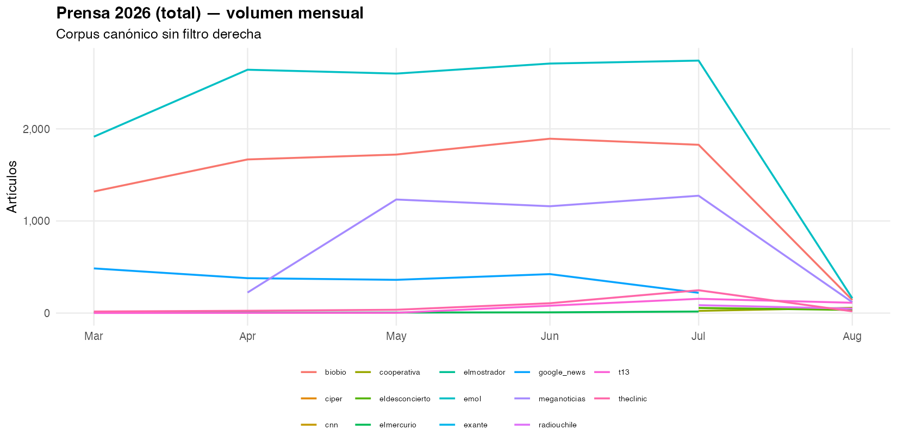
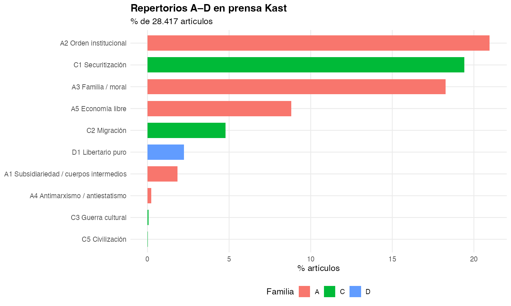
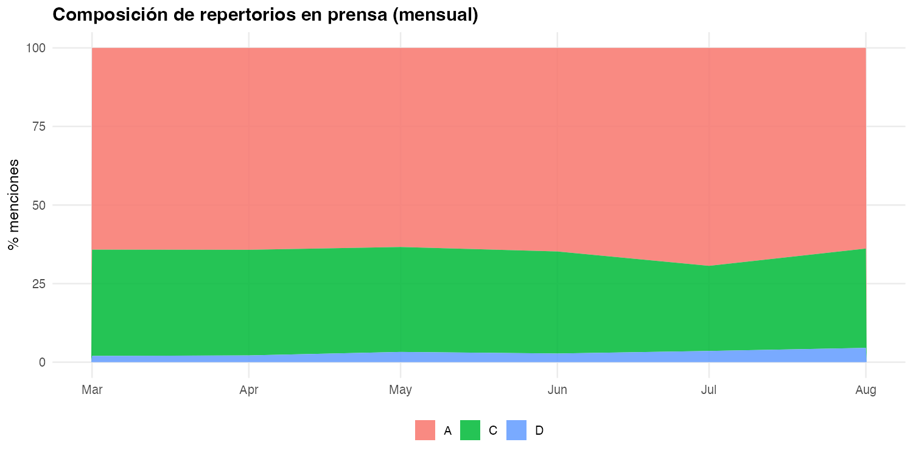
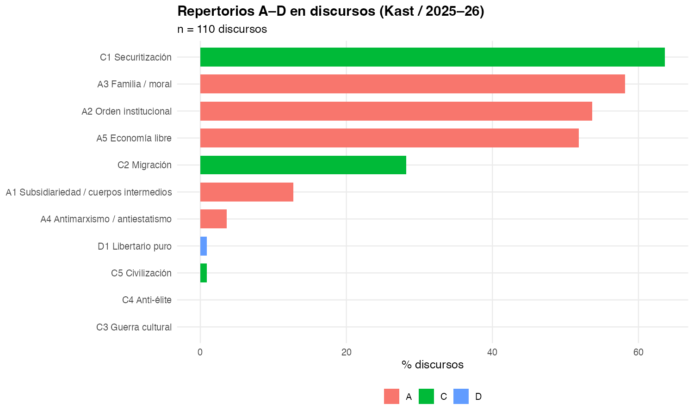
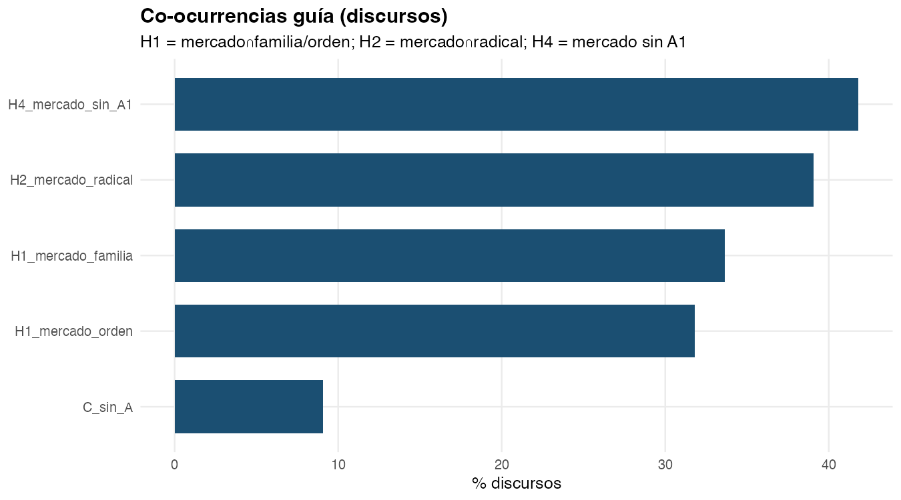
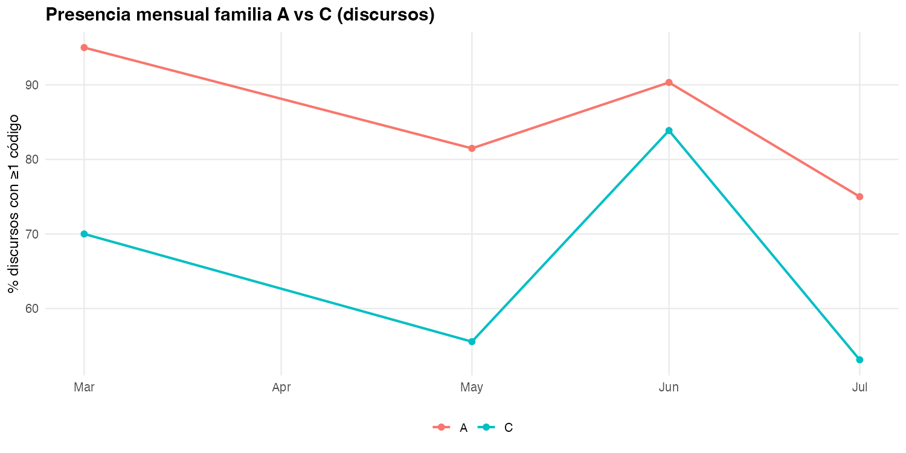

| tabla | n | updated_at |
|---|---|---|
| prensa | 38691 | 2026-08-18 13:38:24 |
| discursos | 248 | 2026-08-18 13:38:24 |
| votaciones | 5906 | 2026-08-18 13:38:24 |
| votos | 790317 | 2026-08-18 13:38:24 |
| diputados | 155 | 2026-08-18 13:38:24 |
| proyectos | 612 | 2026-08-18 13:38:24 |
| menciones_repertorio | 31383 | 2026-08-18 13:38:24 |
| votaciones_ley_bcn.csv | 5906 | 2026-08-18 13:38:24 |
Informe de análisis — Neogremialismo
Prensa · Discursos · Cámara · Proyectos de ley
1 Datos canónicos
Pipeline: scrapers → raw → build_canonicos.py → analysis/run_todo.R → este informe.
Periodo primario: gobierno Kast (fecha >= 2026-03-11). Prensa 2026 = corpus total (sin filtro derecha).
2 Prensa
Corpus canónico sin filtro keyword. Repertorios A–D del diccionario compartido.



3 Discursos
Discursos de Presidencia (Kast / 2025–26) y co-ocurrencias guía (H1, H2, H4).



4 Cámara
Cohesión Rice del bloque REP–UDI–RN–PNL y convergencia REP–PNL (H3).


5 Proyectos de ley
Mensajes del Ejecutivo (-05) y repertorios en la agenda legislativa.


6 Puente agenda
Eventos críticos ±7 días: eco mediático y legislativo.


| label | fecha | boletin | n_prensa | n_discursos | n_votos_boletin | pct_C_prensa |
|---|---|---|---|---|---|---|
| PDL | 2026-04-22 | 18216-05 | 2589 | 0 | 0 | 21.86172 |
| Endeudamiento | 2026-06-17 | 18296-05 | 3146 | 14 | 3 | 23.01335 |
7 Hipótesis (indicadores automáticos)
| hipotesis | indicador | valor | n | fecha_corte |
|---|---|---|---|---|
| H1 | pct_derecha_H1_coocurrencia_2021_2026 | 3.47 | 124144 | 2026-07-29 |
| H1 | pct_discursos_A5_A2 | 31.82 | 110 | 2026-08-05 |
| H1 | pct_discursos_A5_A3 | 33.64 | 110 | 2026-08-05 |
| H2 | pct_C_prensa_ventana_endeudamiento | 23.01 | 3146 | 2026-08-13 |
| H2 | pct_C_prensa_ventana_pdl | 21.86 | 2589 | 2026-08-13 |
| H2 | pct_derecha_C1_C2_C3_2021_2026 | 36.79 | 124144 | 2026-07-29 |
| H2 | pct_derecha_H2_hibrido_2021_2026 | 2.18 | 124144 | 2026-07-29 |
| H2 | pct_discursos_C_sin_A | 9.09 | 110 | 2026-08-05 |
| H2 | pct_prensa_C1_C2_C3 | 21.94 | 28417 | 2026-08-13 |
| H3 | convergencia_REP_PNL_pct | 91.80 | 4771 | 2026-08-18 |
| H3 | rice_REP | 0.98 | 5731 | 2026-08-18 |
| H4 | pct_derecha_A5_sin_A1_2021_2026 | 7.54 | 124144 | 2026-07-29 |
| H4 | pct_discursos_A5_sin_A1 | 41.82 | 110 | 2026-08-05 |
| H4 | pct_prensa_A5_sin_A1 | 8.41 | 28417 | 2026-08-13 |
| H4 | pct_proyectos05_A1 | 0.00 | 42 | 2026-08-18 |
| H | Lectura operativa |
|---|---|
| H1 | Co-ocurrencia A5∩(A2|A3) en discursos |
| H2 | Presencia C1–C3 en prensa total y en ventanas de eventos |
| H3 | Convergencia / divergencia REP–PNL (Rice) |
| H4 | Escasez A1 en proyectos -05 y co-ocurrencia A5 sin A1 |
8 Reproducción
make analisis # ETL + módulos R
make informe # + quarto render docs/informe_analisis.qmd
# o paso a paso:
python3 data/scripts/build_canonicos.py
Rscript analysis/run_todo.R
quarto render docs/informe_analisis.qmd